Look n°24
Coin coiffeuse de Noël blanc crème et doré
Un coin beauté de Noël blanc, crème et doré : coiffeuse effet marbre, miroir lumineux habillé de verdure et rennes illuminés au pied d'un sapin enneigé. Voici les articles pour recréer ce look chez toi.
Prix au 14/11/2026
-
Coiffeuse effet marbre blanc et dorée, 4 tiroirs, 112 cm
Plateau et caissons effet marbre blanc, liserés et poignées dorés, piètement doré avec 2 tablettes en verre. 112 × 55 cm, 80 cm de haut. Article proche : sur l'image, 4 tiroirs à droite ; le vrai a 3 tiroirs et une niche ouverte en haut.
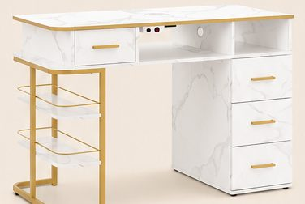
-
Chaise en velours tressé sable, pieds dorés (lot de 2)
Dossier enveloppant en grosses tresses de velours, 4 pieds fins dorés. 60,5 × 55 cm, 75 cm de haut. Vendues par 2 (une seule sur l'image).
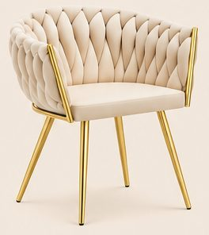
145,90 €Voir sur Amazon -
Miroir rond lumineux LED, Ø 60 cm
Miroir rond sans cadre, halo de lumière tout autour, 3 teintes, intensité réglable. 60 × 60 cm.
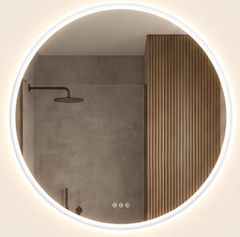
129,99 €Voir sur Amazon -
Sapin de Noël enneigé lumineux 180 cm
Sapin floqué de neige, 200 LED blanc chaud intégrées. 180 cm de haut, Ø 102 cm.
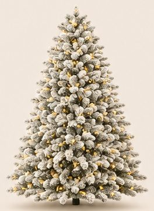
99,99 €Voir sur Amazon -
Rideaux effet lin beige, 140 × 225 cm (lot de 2)
Rideaux occultants à œillets, effet lin beige. 140 × 225 cm chacun.
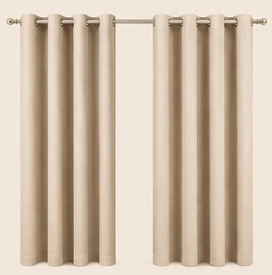
40,99 €Voir sur Amazon -
Tapis shaggy crème à poils longs, 120 × 170 cm
Poils longs très moelleux (3 cm), crème. 120 × 170 cm.
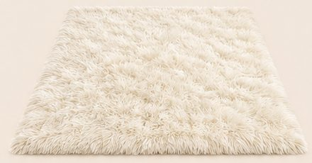
49,90 €Voir sur Amazon -
Jupe de sapin en fausse fourrure blanche, Ø 120 cm
Fausse fourrure blanc neige très moelleuse, cache le pied du sapin. Ø 120 cm.
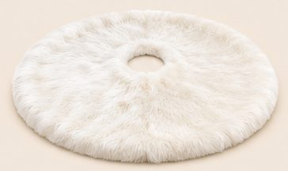
31,99 €Voir sur Amazon -
Famille de rennes lumineux (lot de 3)
Rennes en fil doré remplis de LED blanc chaud : un grand de 70 cm, une femelle de 66 cm et un faon de 40 cm.
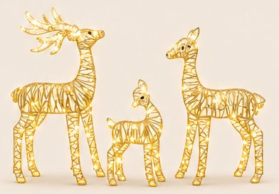
47,49 €Voir sur Amazon -
Boules de Noël blanches et dorées, 6 cm (lot de 16)
Boules blanches, dorées et argentées, motifs ciselés et étoiles. 6 cm.
31,99 €Voir sur Amazon -
Fleurs de poinsettia dorées pailletées (20 pièces)
Fleurs à piquer en or pailleté et voile blanc, dans le sapin et dans l'arc du miroir.
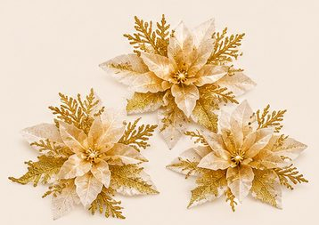
19,99 €Voir sur Amazon -
Nœuds de sapin en velours champagne (16 pièces)
1 grand nœud de 25 cm et 15 nœuds de 10 cm en velours champagne.
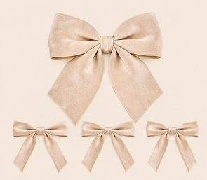
11,99 €Voir sur Amazon -
Guirlandes d'eucalyptus à petites fleurs blanches, 180 cm (lot de 4)
Feuillage d'eucalyptus vert sauge et petites fleurs blanches, pour habiller le miroir. 4 × 180 cm.
19,99 €Voir sur Amazon -
Guirlande lumineuse fil de cuivre, 10 m
100 micro-LED blanc chaud sur fil fin, à piles, mêlées à l'arc du miroir. 10 m.
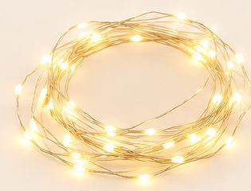
6,99 €Voir sur Amazon -
Ruban LED COB blanc chaud, 5 m
Ligne de lumière continue sous la coiffeuse, variateur et télécommande. 5 m.
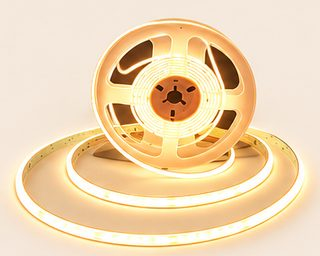
30,99 €Voir sur Amazon -
Roses blanches en pot effet marbre, anse dorée
Roses blanches et feuillage dans un pot blanc marbré, anse dorée en forme de nœud. 21 cm de haut.
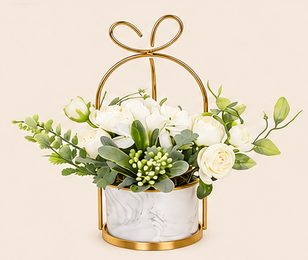
17,99 €Voir sur Amazon -
Village de Noël en céramique blanche (16 pièces)
4 maisonnettes lumineuses, 2 rennes et 1 père Noël en céramique blanche.
45,99 €Voir sur Amazon -
Petit plateau rond en marbre blanc, Ø 15 cm
Marbre blanc veiné gris, petit rebord. Ø 15 cm.
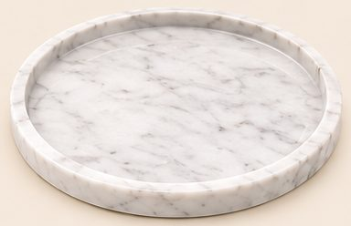
21,99 €Voir sur Amazon -
Porte-bijoux 3 niveaux, velours crème et doré
2 barres en velours crème, barres dorées pour les boucles d'oreilles, socle crème. 21 × 13 cm, 31 cm de haut.
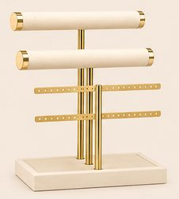
25,99 €Voir sur Amazon
Enregistrer ce look sur Pinterest
Comment naît un lookComment chaque article est choisi, mesuré et vérifiéImage d'inspiration générée par IA. Prix indicatifs, revérifiés toutes les deux semaines.